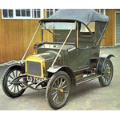
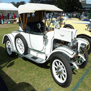
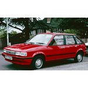
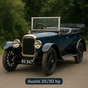

Austin Models
Small Cars
Model: 7hp
Production: 1910–1911
Model: 7
Production: 1922–1939

Model: Seven
Production: 1959–1961

Model: Mini
Production: 1961–1969

Model: Metro
Production: 1980–1990

Small Family Cars
Model: 10hp
Production: 1911–1915
Model: 10
Production: 1932–1947

Model: 8
Production: 1939–1947

Model: A30
Production: 1951–1956

Model: A35
Production: 1956–1959

Model: A35 Countryman
Production: 1956–1962

Model: Nash Metropolitan / Austin Metropolitan
Production: 1954–1961

Model: A40 Farina Mk I
Production: 1958–1961

Model: A40 Farina Mk II
Production: 1961–1967

Model: 1100
Production: 1963–1974

Model: 1300
Production: 1967–1974

Model: Allegro
Production: 1973–1983

Model: Maestro
Production: 1983–1994
Large Family Cars
Model: 15hp
Production: 1913–1914

Model: Heavy 12
Production: 1922–1940

Model: 16 (16/18)
Production: 1927–1938

Model: Light 12/6
Production: 1931–1936

Model: Light 12/4
Production: 1933–1939

Model: 14
Production: 1937–1939

Model: 18
Production: 1938–1939

Model: 12
Production: 1939–1947

Model: 16hp
Production: 1945–1949

Model: A40 Devon/Dorset
Production: 1947–1952

Model: A70 Hampshire
Production: 1948–1950

Model: A70 Hereford
Production: 1950–1954

Model: A40 Somerset
Production: 1952–1954
Model: A40/A50/A55 Cambridge
Production: 1954–1958

Model: A90/A95/A105 Westminster
Production: 1954–1959

Model: A55 Cambridge Mk2
Production: 1959–1961

Model: A99 Westminster
Production: 1959–1961

Model: A60 Cambridge
Production: 1961–1969

Model: A110 Westminster
Production: 1961–1968

Model: 1800/2200 (ADO17)
Production: 1964–1975

Model: 3-Litre
Production: 1967–1971
Model: Maxi
Production: 1969–1981

Model: 1800/2200 (ADO71)
Production: 1975–1975

Model: Ambassador
Production: 1982–1984
Model: Montego
Production: 1984–1994

Large Cars
Model: 25/30
Production: 1906–1907
Model: 15/20
Production: 1906–1907

Model: 18/24
Production: 1907–1913

Model: 40hp
Production: 1908–1913

Model: 60hp 6-cylinder
Production: 1908–1910

Model: 50hp 6-cylinder
Production: 1910–1913

Model: 20hp
Production: 1912–1918

Model: 30hp
Production: 1914–1916

Model: Twenty
Production: 1919–1938

Model: Twenty Eight (28/6)
Production: 1938–1939

Model: A110/A125 Sheerline
Production: 1947–1954

Model: A120 Princess
Production: 1946–1956

Model: A135 Princess
Production: 1947–1956

Model: Princess IV
Production: 1956–1959

Limousines and Landaulettes
Model: 25/30
Production: 1906–1907
Model: 15/20
Production: 1906–1907
Model: 18/24
Production: 1907–1913
Model: 40hp
Production: 1908–1913
Model: 60hp 6-cylinder
Production: 1908–1910
Model: 50hp 6-cylinder
Production: 1910–1913
Model: 20hp
Production: 1912–1918
Model: 30hp
Production: 1914–1916
Model: Twenty
Production: 1919–1938
Model: 16 (16/18)
Production: 1927–1938
Model: 18
Production: 1938–1939
Model: Twenty Eight
Production: 1938–1939
Model: A110/A125 Sheerline
Production: 1947–1954
Model: A120 Princess
Production: 1946–1956
Model: A135 Princess
Production: 1947–1956
Model: Princess IV
Production: 1956–1959
Sports Cars
Model: Twenty Sports Tourer
Production: 1920–1923

Model: A90 Atlantic Convertible
Production: 1948–1950

Model: A90 Atlantic Sports Saloon
Production: 1949–1952

Model: A40 Sports
Production: 1950–1953
Model: Austin-Healey 100
Production: 1953–1956

Model: Austin-Healey 100-6
Production: 1956–1959

Model: Austin-Healey 3000
Production: 1959–1967

Model: Austin-Healey Sprite
Production: 1958–1970
Model: Sprite
Production: 1971